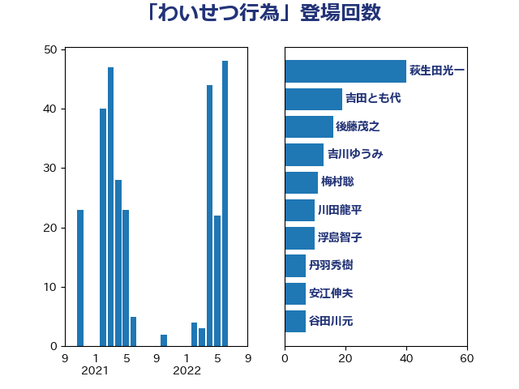

単語「わいせつ行為」

| 萩生田光一 | 自由民主党 | 40 回 |
| 吉田とも代 | 日本維新の会 | 19 回 |
| 後藤茂之 | 自由民主党 | 16 回 |
| 吉川ゆうみ | 自由民主党 | 13 回 |
| 梅村聡 | 日本維新の会 | 11 回 |
| 川田龍平 | 立憲民主党 | 10 回 |
| 浮島智子 | 公明党 | 10 回 |
| 丹羽秀樹 | 自由民主党 | 7 回 |
| 安江伸夫 | 公明党 | 7 回 |
| 谷田川元 | 立憲民主党 | 7 回 |
| 伊藤孝恵 | 国民民主党 | 6 回 |
| 斎藤嘉隆 | 立憲民主党 | 6 回 |
| 遠藤敬 | 日本維新の会 | 5 回 |
| 大岡敏孝 | 自由民主党 | 4 回 |
| 玉木雄一郎 | 国民民主党 | 4 回 |
| 山井和則 | 立憲民主党 | 3 回 |
| 山田賢司 | 自由民主党 | 3 回 |
| 牧義夫 | 立憲民主党 | 3 回 |
| 上野通子 | 自由民主党 | 2 回 |
| 佐々木さやか | 公明党 | 2 回 |
| 古賀友一郎 | 自由民主党 | 2 回 |
| 山口那津男 | 公明党 | 2 回 |
| 石井苗子 | 日本維新の会 | 2 回 |
| 稲田朋美 | 自由民主党 | 2 回 |
| 寺田学 | 立憲民主党 | 1 回 |
| 掘井健智 | 日本維新の会 | 1 回 |
| 東徹 | 日本維新の会 | 1 回 |
| 柚木道義 | 立憲民主党 | 1 回 |
| 梅村みずほ | 日本維新の会 | 1 回 |
| 横沢高徳 | 立憲民主党 | 1 回 |
| 橋本岳 | 自由民主党 | 1 回 |
| 櫻井周 | 立憲民主党 | 1 回 |
| 池田佳隆 | 自由民主党 | 1 回 |
| 舩後靖彦 | れいわ新選組 | 1 回 |
| 野田聖子 | 自由民主党 | 1 回 |